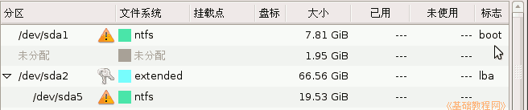
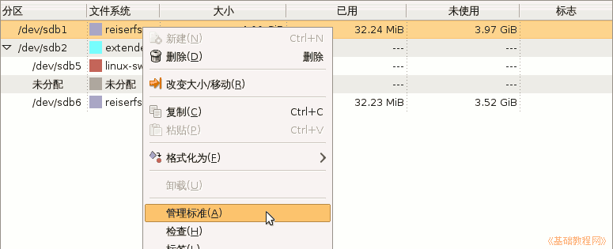
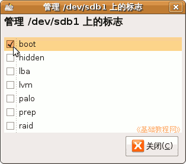
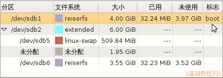

Gparted 分区编辑器基础
作者：TeliuTe 来源：基础教程网
六、分区激活标志 返回目录 下一课系统启动时，需要寻找一个激活的分区，这个分区一般是主分区，并安装有操作系统，下面我们来看一个练习；
注意：错误的操作会导致系统无法启动；
1、激活分区
1）点菜单“系统－系统管理－分区编辑器”打开 Gparted 窗口，
在列表里查看一下是哪一个分区的最后带有“boot”激活标志，一般是第一个；

2）选中要激活的分区，瞄准点右键，在出来的菜单中选择“管理标准”；

3）出来一个面板，打勾选中第一个“boot”左边的小方框，就会激活这个分区，注意不要乱国勾，看一下即可，
这儿还有其他的，如 hidden、lba、lvm、palo、prep、raid 等，可以自己查找相关资料；

4）点“关闭”按钮，回到窗口中，这个分区的最右边就有了一个boot启动标志；

5）计算机启动时会自动搜索各个分区，寻找boot标志的分区，然后引导这个分区上的操作系统；
6）如果改乱了，关闭窗口前，记着再改回到原来激活分区；
本节学习了Ubuntu分区编辑器中的基本操作，如果你成功地完成了练习，请继续学习下一课内容；本教程由86团学校TeliuTe制作|著作权所有
基础教程网：http://teliute.org/
美丽的校园……
转载和引用本站内容，请保留作者和本站链接。